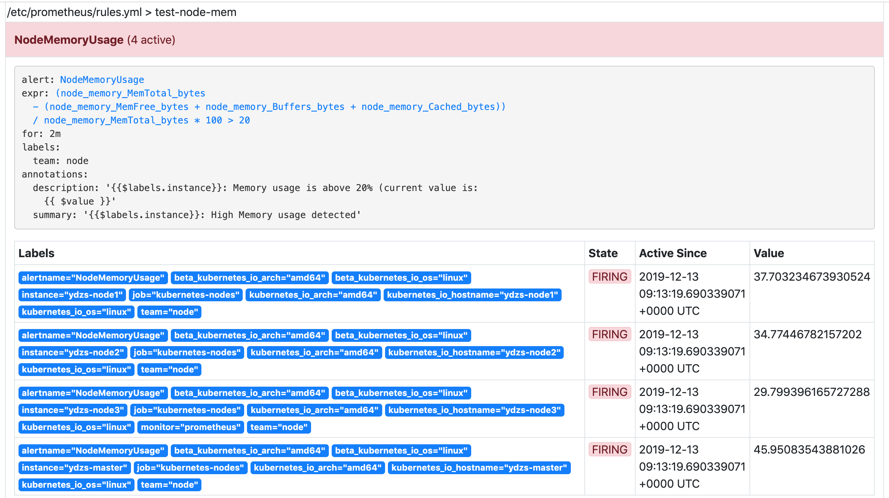
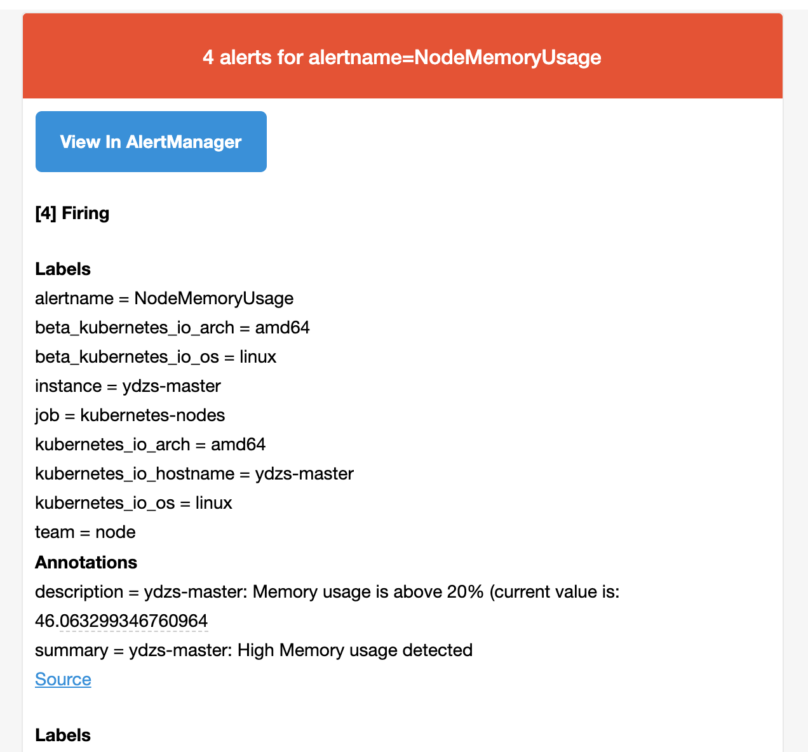

Alertmanager
Alertmanager¶
前面我们学习 Prometheus 的时候了解到 Prometheus 包含一个报警模块，就是我们的
AlertManager，Alertmanager 主要用于接收 Prometheus 发送的告警信息，它支持丰富的告警通知渠道，而且很容易做到告警信息进行去重，降噪，分组等，是一款前卫的告警通知系统。通过在 Prometheus 中定义告警规则，Prometheus会周期性的对告警规则进行计算，如果满足告警触发条件就会向Alertmanager 发送告警信息。
在 Prometheus 中一条告警规则主要由以下几部分组成：

- 告警名称：用户需要为告警规则命名，当然对于命名而言，需要能够直接表达出该告警的主要内容
- 告警规则：告警规则实际上主要由
PromQL进行定义，其实际意义是当表达式（PromQL）查询结果持续多长时间（During）后出发告警
在 Prometheus 中，还可以通过 Group（告警组）对一组相关的告警进行统一定义。Alertmanager 作为一个独立的组件，负责接收并处理来自 Prometheus Server 的告警信息。Alertmanager 可以对这些告警信息进行进一步的处理，比如当接收到大量重复告警时能够消除重复的告警信息，同时对告警信息进行分组并且路由到正确的通知方，Prometheus 内置了对邮件、Slack 多种通知方式的支持，同时还支持与 Webhook 的集成，以支持更多定制化的场景。例如，目前 Alertmanager 还不支持钉钉，用户完全可以通过 Webhook 与钉钉机器人进行集成，从而通过钉钉接收告警信息。同时 AlertManager 还提供了静默和告警抑制机制来对告警通知行为进行优化。
安装¶
从官方文档 https://prometheus.io/docs/alerting/configuration/ 中我们可以看到下载 AlertManager 二进制文件后，可以通过下面的命令运行：
$ ./alertmanager --config.file=simple.yml
其中
-config.file参数是用来指定对应的配置文件的，由于我们这里同样要运行到 Kubernetes 集群中来，所以我们使用 Docker 镜像的方式来安装，使用的镜像是：
prom/alertmanager:v0
。
首先，指定配置文件，同样的，我们这里使用一个 ConfigMap 资源对象：(alertmanager-config.yaml)
apiVersion: v1
kind: ConfigMap
metadata:
name: alert-config
namespace: kube-mon
data:
config.yml: |-
global:
# 当alertmanager持续多长时间未接收到告警后标记告警状态为 resolved
resolve_timeout: 5m
# 配置邮件发送信息
smtp_smarthost: 'smtp.1com:25'
smtp_from: 'ych_1024@1com'
smtp_auth_username: 'ych_1024@1com'
smtp_auth_password: '<邮箱密码>'
smtp_hello: '1com'
smtp_require_tls: false
# 所有报警信息进入后的根路由，用来设置报警的分发策略
route:
# 这里的标签列表是接收到报警信息后的重新分组标签，例如，接收到的报警信息里面有许多具有 cluster=A 和 alertname=LatncyHigh 这样的标签的报警信息将会批量被聚合到一个分组里面
group_by: ['alertname', 'cluster']
# 当一个新的报警分组被创建后，需要等待至少 group_wait 时间来初始化通知，这种方式可以确保您能有足够的时间为同一分组来获取多个警报，然后一起触发这个报警信息。
group_wait: 30s
# 相同的group之间发送告警通知的时间间隔
group_interval: 30s
# 如果一个报警信息已经发送成功了，等待 repeat_interval 时间来重新发送他们，不同类型告警发送频率需要具体配置
repeat_interval: 1h
# 默认的receiver：如果一个报警没有被一个route匹配，则发送给默认的接收器
receiver: default
# 上面所有的属性都由所有子路由继承，并且可以在每个子路由上进行覆盖。
routes:
- receiver: email
group_wait: 10s
match:
team: node
receivers:
- name: 'default'
email_configs:
- to: '517554016@qq.com'
send_resolved: true # 接受告警恢复的通知
- name: 'email'
email_configs:
- to: '517554016@qq.com'
send_resolved: true
分组
分组机制可以将详细的告警信息合并成一个通知，在某些情况下，比如由于系统宕机导致大量的告警被同时触发，在这种情况下分组机制可以将这些被触发的告警合并为一个告警通知，避免一次性接受大量的告警通知，而无法对问题进行快速定位。
这是 AlertManager 的配置文件，我们先直接创建这个 ConfigMap 资源对象：
$ kubectl apply -f alertmanager-config.yaml
configmap/alert-config created
然后配置 AlertManager 的容器，直接使用一个 Deployment 来进行管理即可，对应的 YAML 资源声明如下：
apiVersion: apps/v1
kind: Deployment
metadata:
name: alertmanager
namespace: kube-mon
labels:
app: alertmanager
spec:
selector:
matchLabels:
app: alertmanager
template:
metadata:
labels:
app: alertmanager
spec:
volumes:
- name: alertcfg
configMap:
name: alert-config
containers:
- name: alertmanager
image: prom/alertmanager:v0
imagePullPolicy: IfNotPresent
args:
- "--config.file=/etc/alertmanager/config.yml"
ports:
- containerPort: 9093
name: http
volumeMounts:
- mountPath: "/etc/alertmanager"
name: alertcfg
resources:
requests:
cpu: 100m
memory: 256Mi
limits:
cpu: 100m
memory: 256Mi
这里我们将上面创建的
alert-config这个 ConfigMap 资源对象以 Volume 的形式挂载到/etc/alertmanager目录下去，然后在启动参数中指定了配置文件
--config.file=/etc/alertmanager/config.yml
，然后我们可以来创建这个资源对象：
$ kubectl apply -f alertmanager-deploy.yaml
deployment.apps/alertmanager created
为了可以访问到 AlertManager，同样需要我们创建一个对应的 Service 对象：(alertmanager-svc.yaml)
apiVersion: v1
kind: Service
metadata:
name: alertmanager
namespace: kube-mon
labels:
app: alertmanager
spec:
selector:
app: alertmanager
type: NodePort
ports:
- name: web
port: 9093
targetPort: http
使用 NodePort 类型也是为了方便测试，创建上面的 Service 这个资源对象：
$ kubectl apply -f alertmanager-svc.yaml
service/alertmanager created
AlertManager 的容器启动起来后，我们还需要在 Prometheus 中配置下 AlertManager 的地址，让 Prometheus 能够访问到 AlertManager，在 Prometheus 的 ConfigMap 资源清单中添加如下配置：
alerting:
alertmanagers:
- static_configs:
- targets: ["alertmanager:9093"]
更新这个资源对象后，稍等一小会儿，执行 reload 操作即可。
报警规则¶
现在我们只是把 AlertManager 容器运行起来了，也和 Prometheus 进行了关联，但是现在我们并不知道要做什么报警，因为没有任何地方告诉我们要报警，所以我们还需要配置一些报警规则来告诉我们对哪些数据进行报警。
警报规则允许你基于 Prometheus 表达式语言的表达式来定义报警报条件，并在触发警报时发送通知给外部的接收者。
同样在 Prometheus 的配置文件中添加如下报警规则配置：
rule_files:
- /etc/prometheus/rules.yml
其中
rule_files就是用来指定报警规则的，这里我们同样将rules.yml文件用 ConfigMap 的形式挂载到/etc/prometheus目录下面即可，比如下面的规则：（alert-rules.yml）
apiVersion: v1
kind: ConfigMap
metadata:
name: prometheus-config
namespace: kube-mon
data:
prometheus.yml: |
global:
scrape_interval: 15s
scrape_timeout: 15s
evaluation_interval: 30s # 默认情况下每分钟对告警规则进行计算
alerting:
alertmanagers:
- static_configs:
- targets: ["alertmanager:9093"]
rule_files:
- /etc/prometheus/rules.yml
...... # 省略prometheus其他部分
rules.yml: |
groups:
- name: test-node-mem
rules:
- alert: NodeMemoryUsage
expr: (node_memory_MemTotal_bytes - (node_memory_MemFree_bytes + node_memory_Buffers_bytes + node_memory_Cached_bytes)) / node_memory_MemTotal_bytes * 100 > 20
for: 2m
labels:
team: node
annotations:
summary: "{{$labels.instance}}: High Memory usage detected"
description: "{{$labels.instance}}: Memory usage is above 20% (current value is: {{ $value }}"
上面我们定义了一个名为
NodeMemoryUsage的报警规则，一条报警规则主要由以下几部分组成：
alert：告警规则的名称expr：是用于进行报警规则 PromQL 查询语句for：评估等待时间（Pending Duration），用于表示只有当触发条件持续一段时间后才发送告警，在等待期间新产生的告警状态为pendinglabels：自定义标签，允许用户指定额外的标签列表，把它们附加在告警上annotations：指定了另一组标签，它们不被当做告警实例的身份标识，它们经常用于存储一些额外的信息，用于报警信息的展示之类的
for 属性
这个参数主要用于降噪，很多类似响应时间这样的指标都是有抖动的，通过指定
Pending Duration，我们可以过滤掉这些瞬时抖动，可以让我们能够把注意力放在真正有持续影响的问题上。为了让告警信息具有更好的可读性，Prometheus 支持模板化
label和annotations中的标签的值，通过$labels.变量可以访问当前告警实例中指定标签的值，$value则可以获取当前 PromQL 表达式计算的样本值。为了方便演示，我们将的表达式判断报警临界值设置为 20，重新更新 ConfigMap 资源对象，由于我们在 Prometheus 的 Pod 中已经通过 Volume 的形式将 prometheus-config 这个一个 ConfigMap 对象挂载到了
/etc/prometheus目录下面，所以更新后，该目录下面也会出现rules.yml文件，所以前面配置的rule_files路径也是正常的，更新完成后，重新执行 reload 操作，这个时候我们去 Prometheus 的 Dashboard 中切换到 alerts 路径下面就可以看到有报警配置规则的数据了：
页面中出现了我们刚刚定义的报警规则信息，而且报警信息中还有状态显示，一个报警信息在生命周期内有下面3种状态：
pending: 表示在设置的阈值时间范围内被激活了firing: 表示超过设置的阈值时间被激活了inactive: 表示当前报警信息处于非活动状态
同时对于已经
pending或者firing的告警，Prometheus 也会将它们存储到时间序列ALERTS{}中。当然我们也可以通过表达式去查询告警实例：
ALERTS{alertname="<alert name>", alertstate="pending|firing", <additional alert labels>}
样本值为
1表示当前告警处于活动状态（pending 或者 firing），当告警从活动状态转换为非活动状态时，样本值则为0。我们这里的状态现在是
firing就表示这个报警已经被激活了，我们这里的报警信息有一个team=node这样的标签，而最上面我们配置 alertmanager 的时候就有如下的路由配置信息了：
routes:
- receiver: email
group_wait: 10s
match:
team: node
所以我们这里的报警信息会被 email 这个接收器来进行报警，我们上面配置的是邮箱，所以正常来说这个时候我们会收到一封如下的报警邮件：

我们可以看到收到的邮件内容中包含一个
View In AlertManager的链接，我们同样可以通过 NodePort 的形式去访问到 AlertManager 的 Dashboard 页面：
$ kubectl get svc -n kube-mon
NAME TYPE CLUSTER-IP EXTERNAL-IP PORT(S) AGE
alertmanager NodePort 195 <none> 9093:31194/TCP 141m
然后通过
<任一Node节点>:31194进行访问，我们就可以查看到 AlertManager 的 Dashboard 页面，在这个页面中我们可以进行一些操作，比如过滤、分组等等，里面还有两个新的概念：Inhibition(抑制)和Silences(静默)。
- Inhibition：如果某些其他警报已经触发了，则对于某些警报，Inhibition 是一个抑制通知的概念。例如：一个警报已经触发，它正在通知整个集群是不可达的时，Alertmanager 则可以配置成关心这个集群的其他警报无效。这可以防止与实际问题无关的数百或数千个触发警报的通知，Inhibition 需要通过上面的配置文件进行配置。
- Silences：静默是一个非常简单的方法，可以在给定时间内简单地忽略所有警报。Silences 基于 matchers配置，类似路由树。来到的警告将会被检查，判断它们是否和活跃的 Silences 相等或者正则表达式匹配。如果匹配成功，则不会将这些警报发送给接收者。
由于全局配置中我们配置的
repeat_interval: 1h，所以正常来说，上面的测试报警如果一直满足报警条件(内存使用率大于20%)的话，那么每1小时我们就可以收到一条报警邮件。一条告警产生后，还要经过 Alertmanager 的分组、抑制处理、静默处理、去重处理和降噪处理最后再发送给接收者。这个过程中可能会因为各种原因会导致告警产生了却最终没有进行通知，可以通过下图了解整个告警的生命周期：

WebHook 接收器¶
上面我们配置的是 AlertManager 自带的邮件报警模板，我们也说了 AlertManager 支持很多中报警接收器，比如 slack、微信之类的，其中最为灵活的方式当然是使用 webhook 了，我们可以定义一个 webhook 来接收报警信息，然后在 webhook 里面去进行处理，需要发送怎样的报警信息我们自定义就可以。
我这里实现了一个简单的 webhook 程序，代码仓库地址：github.com/cnych/alertmanager-dingtalk-hook
当然我们得将上面这个服务部署到集群中来，对应的资源清单如下：(dingtalk-hook.yaml)
apiVersion: apps/v1
kind: Deployment
metadata:
name: dingtalk-hook
namespace: kube-mon
spec:
selector:
matchLabels:
app: dingtalk-hook
template:
metadata:
labels:
app: dingtalk-hook
spec:
containers:
- name: dingtalk-hook
image: cnych/alertmanager-dingtalk-hook:v2
imagePullPolicy: IfNotPresent
ports:
- containerPort: 5000
name: http
env:
- name: PROME_URL
value: k8s.qikqiak.com:30980
- name: LOG_LEVEL
value: debug
- name: ROBOT_TOKEN
valueFrom:
secretKeyRef:
name: dingtalk-secret
key: token
- name: ROBOT_SECRET
valueFrom:
secretKeyRef:
name: dingtalk-secret
key: secret
resources:
requests:
cpu: 50m
memory: 100Mi
limits:
cpu: 50m
memory: 100Mi
---
apiVersion: v1
kind: Service
metadata:
name: dingtalk-hook
namespace: kube-mon
spec:
selector:
app: dingtalk-hook
ports:
- name: hook
port: 5000
targetPort: http
上面我们有一些环境变量配置：
- ROBOT_TOKEN：钉钉机器人 TOKEN
- PROME_URL：手动指定跳转后的 Promethues 地址，默认会是 Pod 的地址
- LOG_LEVEL：日志级别，设置成
debug可以看到 AlertManager WebHook 发送的数据，方便调试使用，不需调试可以不设置该环境变量 - ROBOT_SECRET：为钉钉机器人的安全设置密钥，机器人安全设置页面，加签一栏下面显示的 SEC 开头的字符串
上面我们声明的 ROBOT_TOKEN 和 ROBOT_SECRET 环境变量，由于这是一个相对于私密的信息，所以我们这里从一个 Secret 对象中去获取，通过如下命令创建一个名为 dingtalk-secret 的 Secret 对象，然后部署上面的资源对象即可：

$ kubectl create secret generic dingtalk-secret --from-literal=token=<钉钉群聊的机器人TOKEN> --from-literal=secret=<钉钉群聊机器人的SECRET> -n kube-mon
secret "dingtalk-secret" created
$ kubectl apply -f dingtalk-hook.yaml
deployment.apps "dingtalk-hook" created
service "dingtalk-hook" created
$ kubectl get pods -n kube-mon
NAME READY STATUS RESTARTS AGE
dingtalk-hook-c4fcd8cd6-6r2b6 1/1 Running 0 45m
......
部署成功后，现在我们就可以给 AlertManager 配置一个 webhook 了，在上面的配置中增加一个路由接收器
routes:
- receiver: webhook
match:
filesystem: node
receivers:
- name: 'webhook'
webhook_configs:
- url: 'http://dingtalk-hook:5000'
send_resolved: true
我们这里配置了一个名为 webhook 的接收器，地址为：
http://dingtalk-hook:5000
，这个地址当然就是上面我们部署的钉钉的 webhook 的接收程序的 Service 地址。
然后我们可以更新 AlertManager 和 Prometheus 的 ConfigMap 资源对象，更新完成后，隔一会儿执行 reload 操作是更新生效，如果有报警触发的话，隔一会儿关于这个节点文件系统的报警就会被触发了，由于这个报警信息包含一个
team=node的 label 标签，所以会被路由到 webhook 这个接收器中，也就是上面我们自定义的这个 dingtalk-hook，触发后可以观察这个 Pod 的日志：
$ kubectl logs -f dingtalk-hook-cc677c46d-gf26f -n kube-mon
* Serving Flask app "app" (lazy loading)
* Environment: production
WARNING: Do not use the development server in a production environment.
Use a production WSGI server instead.
* Debug mode: off
* Running on http://0:5000/ (Press CTRL+C to quit)
2019-12-15 08:11:30,051 DEBUG Starting new HTTPS connection (1): oapi.dingtalk.com:443
2019-12-15 08:11:30,781 DEBUG https://oapi.dingtalk.com:443 "POST /robot/send?access_token=ff5067c95035185a752eb0fe90a1e52fd16f596c8ca89712e18ac2a3e1b7ee89×tamp=1576397489986&sign=wOggfoW%2BAVgvi2BiHnlKd79Tvjf7S3boRAs1BoDhhTE%3D HTTP/1" 200 None
2019-12-15 08:11:30,951 INFO 2129 - - [15/Dec/2019 08:11:30] "POST / HTTP/1" 200 -
可以看到 POST 请求已经成功了，同时这个时候正常来说就可以收到一条钉钉消息了：
由于我们程序中是用一个非常简单的 markdown 形式直接转发的，所以这里报警信息不够友好，没关系，有了这个示例我们完全就可以根据自己的需要来定制消息模板了，可以参考钉钉自定义机器人文档：https://open-doc.dingtalk.com/microapp/serverapi2/qf2nxq

自定义模板¶
告警通知使用的是默认模版，因为它已经编译到二进制包了，所以我们不需要额外配置。如果我们想自定义模版，这又该如何配置呢？
步骤一： 下载官方默认模版
$ wget https://raw.githubusercontent.com/prometheus/alertmanager/master/template/default.tmpl
步骤二： 根据自己的需求修改模版，主要是下面这一段
define "email.default.html"
.... // 修改内容
end
步骤三: 修改 alertmanger.yml，添加 templates 配置参数
templates:
- './template/*.tmpl' # 自定义模版路径
最后保存重新加载配置即可。
记录规则¶
通过
PromQL可以实时对 Prometheus 中采集到的样本数据进行查询，聚合以及其它各种运算操作。而在某些 PromQL 较为复杂且计算量较大时，直接使用 PromQL 可能会导致 Prometheus 响应超时的情况。这时需要一种能够类似于后台批处理的机制在后台完成这些复杂运算的计算，对于使用者而言只需要查询这些运算结果即可。Prometheus 通过Recoding Rule规则支持这种后台计算的方式，可以实现对复杂查询的性能优化，提高查询效率。在 Prometheus 配置文件中，我们可以通过
rule_files定义recoding rule规则文件的访问路径。
rule_files:
[ - <filepath_glob> ... ]
每一个规则文件通过以下格式进行定义：
groups:
[ - <rule_group> ]
一个简单的规则文件可能是这个样子的：
groups:
- name: example
rules:
- record: job:http_inprogress_requests:sum
expr: sum(http_inprogress_requests) by (job)
rule_group 的具体配置项如下所示：
# 分组的名称，在一个文件中必须是唯一的
name: <string>
# 评估分组中规则的频率
[ interval: <duration> | default = global.evaluation_interval ]
rules:
[ - <rule> ... ]
与告警规则一致，一个 group 下可以包含多条规则 rule。
# 输出的时间序列名称，必须是一个有效的 metric 名称
record: <string>
# 要计算的 PromQL 表达式，每个评估周期都是在当前时间进行评估的，结果记录为一组新的时间序列，metrics 名称由 record 设置
expr: <string>
# 添加或者覆盖的标签
labels:
[ <labelname>: <labelvalue> ]
根据规则中的定义，Prometheus 会在后台完成
expr中定义的 PromQL 表达式计算，并且将计算结果保存到新的时间序列record中，同时还可以通过 labels 标签为这些样本添加额外的标签。这些规则文件的计算频率与告警规则计算频率一致，都通过
global.evaluation_interval
进行定义:
global:
[ evaluation_interval: <duration> | default = 1m ]